Laixi Shi
Assistant Professor
Johns Hopkins University
Electrical and Computer Engineering
Data Science and AI Institute
I am an Assistant Professor at the Department of Electrical and Computer Engineering at Johns Hopkins University, affiliated with the Data Science and AI Institute.
My current research focuses on human-centered decision making, especially robust and data-efficient reinforcement learning ranging from theory to applications, situated at the intersection of data science, optimization, and statistics. Prior to joining JHU, I received my Ph.D. from Carnegie Mellon University in 2023, advised by Prof. Yuejie Chi. I was a postdoctoral fellow at Computing + Mathematical Sciences of California Institute of Technology, hosted by Prof. Adam Wierman and Prof. Eric Mazumdar. I obtained my B.Eng. in Electronic Engineering from Tsinghua University.
I have been honored with five Rising Star awards across multiple disciplines: EECS Rising Stars by MIT, Signal Processing Rising Stars by IEEE ICASSP, Computational and Data Sciences Rising Stars by UT Austin, Machine Learning Rising Stars by the University of Maryland, and Data Science Rising Stars by the University of Chicago. My Ph.D. thesis received the CMU ECE A.G. Milnes Award (2024). During my undergraduate, I interned in Columbia University working with Prof. Xiaofan (Fred) Jiang in 2017. I also interned at Mitsubishi Electric Research Laboratories (MERL) mentored by Dehong Liu, as well as Google Research (previous Brain Team) in Paris and Mountain View, working with Pablo Samuel Castro, Robert Dadashi, and Matthieu Geist.
Our group has openings for Ph.D. candidates, postdocs, and long-term interns. I am always seeking self-motivated students excited about the exploration of important, interesting—even challenging—problems, with strong math and/or coding backgrounds for exploitation. If you’re interested in working with me, please email your resume/CV and a brief note on your research interests. I sincerely apologize if I’m unable to reply to everyone due to the high volume of messages, but please don’t hesitate to reach out if our interests truly align!
Postdoc openings are primarily through the JHU DSAI Postdoctoral Fellowship Program (deadline usually at the end of January). Please feel free to apply and mention my name as a potential advisor.
Contact Information: laixis at jhu dot edu
News
[2026/04/30] Two papers got accepted to ICML 2026. Thanks to my wonderful collaborators.
[2026/03/22] The Curious Price Paper got accepted by Operations Research.
[2025/9/27] One paper got accepted by NeurIPS 2025. Thanks to my wonderful collaborators.
[2025/1/22] Hybrid transfer RL got AISTATS oral, 2025. Thanks to my wonderful collaborators.
[2025/1/22] Tractable risk-sensitive games got ICLR Oral and Robust Gymnasium got ICLR poster, 2025. Thanks to my wonderful collaborators.
[2024/9/25] Three papers got accepted by NeurIPS 2024. Thanks to my wonderful collaborators.
[2024/7/12] One paper got accepted by JMLR.
[2024/5/14] Two papers got accepted by RLC 2024. Thanks to my wonderful collaborators.
[2024/5/10] My thesis won the CMU ECE A.G. Milnes Award, which is awarded to a graduating ECE PhD student for the PhD thesis work judged to be of the highest quality and which has had or is likely to have significant impact in his or her field. Credits to Prof. Yuejie Chi and all collaborators!
[2024/5/1] Two papers got accepted by ICML 2024. Thanks to my wonderful collaborators.
[2023/10/17] A new website about practical robust RL has been released.
[2023/9/21] Two papers got accepted by NeurIPS 2023. Thanks for all wonderful collaborators.
[2023/08/21] Computing, Data, and Society Postdoctoral Fellow at Caltech.
Recent/Upcoming Events
[2026/06/12] Co-Organizer of the ACM SIGMETRICS 2026 Workshop: Frontiers in Generative AI: Foundation and Algorithms,
[2026/04/02] Invited Speaker at Frontiers in Online Reinforcement Learning, IMSI, UChicago.
[2026/03/10] Invited Speaker at JHU MINDS.
[2026/01/26] Invited Speaker at Mitsubishi Electric Research Laboratories (MERL).
[2025/09/08] Invited Speaker at John Hopkins Biostat Seminar Series.
[2025/07/14-24] Attend ICML 2025 and ICCOPT 2025.
[2025/04/04] Invited Speaker at Michigan RL Seminar Series.
[2024/11/01] Invited Speaker at the 44th Southern California Control Workshop at USC.
[2024/10/27-30] Invited Speaker at the Asilomar Conference on Signals, Systems, and Computers.
[2024/10/24-25] EECS Rising Stars Workshop at MIT.
[2024/10/20-23] Session Chair at 2024 INFORMS Annual Meeting.
[2024/10/9-11] Invited to The 2024 Young Researchers Workshop at Cornell.
[2024/06/10-14] Instructor in Reinforcement Learning Bootcamp at Caltech.
[2024/04/19] 2024 ISyE Junior Researcher Workshop in Georgia Tech.
[2024/02/18-23] 2024 Information Theory and Applications Workshop.
[2023/11/14-15] Rising Stars In Machine Learning, University of Maryland.
[2023/11/08] Invited Speaker at WORDS 2023: Workshop in Operations Research and Data Science, Duke University.
[2023/10/26] Invited Speaker at Safe Reinforcement Learning Online Seminar.
Foundation
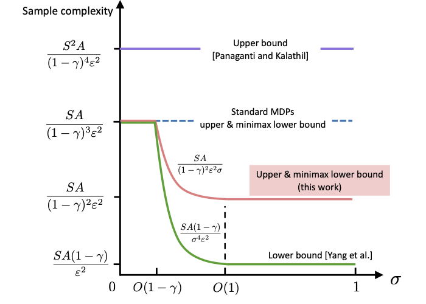
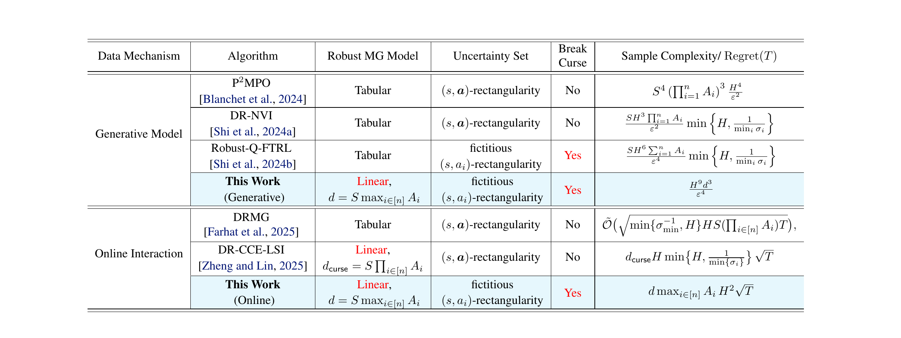
Taming the Curses of Multiagency in Robust Markov Games with Large State Space through Linear Function Approximation
Jingchu Gai, Laixi Shi
arXiv, 2026
[Arxiv]
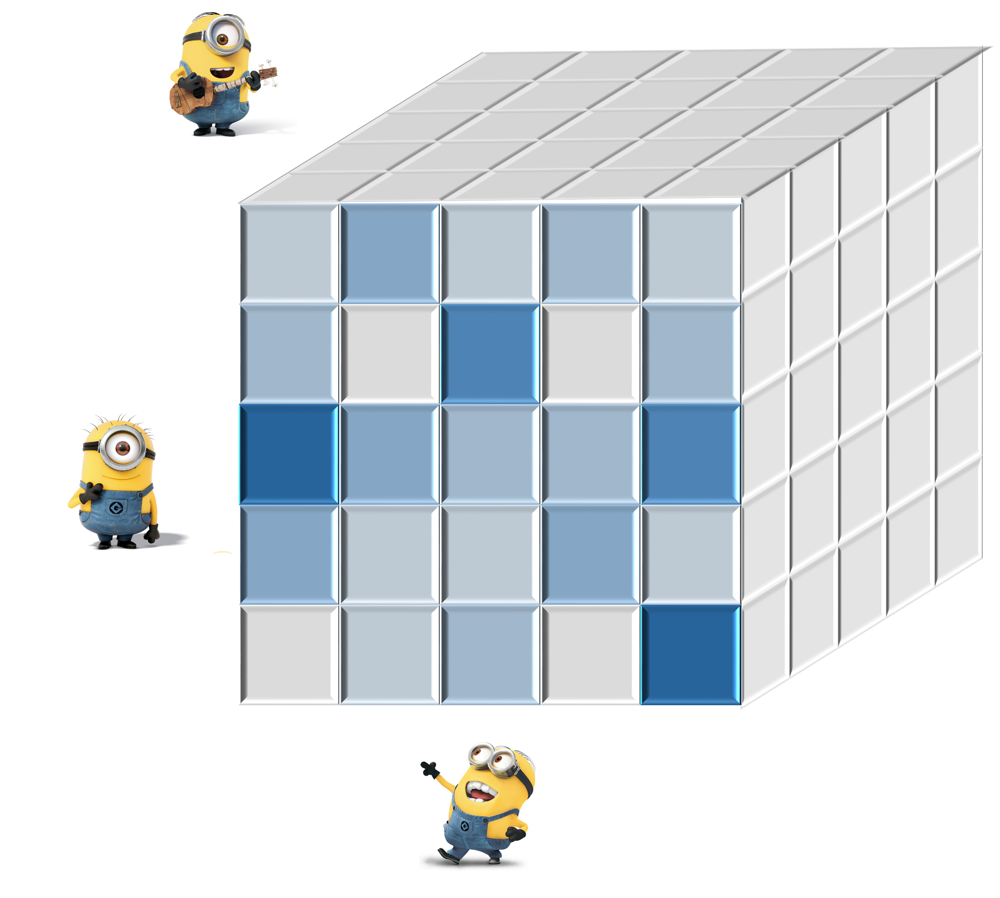
Breaking the Curse of Multiagency in Robust Multi-Agent Reinforcement Learning
Laixi Shi*, Jingchu Gai*, Eric Mazumdar, Yuejie Chi, Adam Wierman.
International Conference on Machine Learning, 2025
[Arxiv]
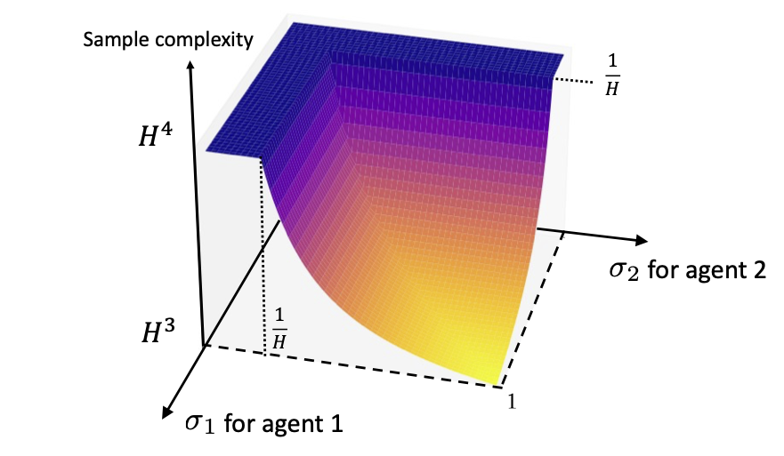
Sample-Efficient Robust Multi-Agent Reinforcement Learning in the Face of Environmental Uncertainty
Laixi Shi, Eric Mazumdar, Yuejie Chi, Adam Wierman.
International Conference on Machine Learning (ICML), 2024
[Arxiv]
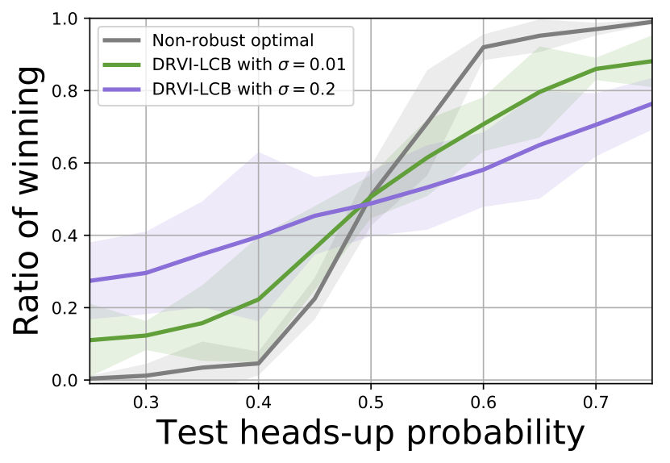
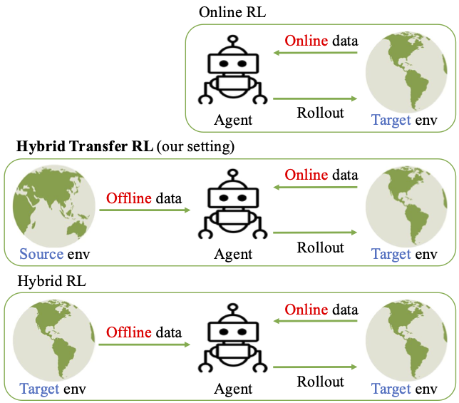
Hybrid Transfer Reinforcement Learning: Provable Sample Efficiency From Shifted-dynamics Data
Chengrui Qu, Laixi Shi, Kishan Panaganti, Pengcheng You, and Adam Wierman
International Conference on Artificial Intelligence and Statistics (AISTATS Oral), 2025.
[Arxiv]
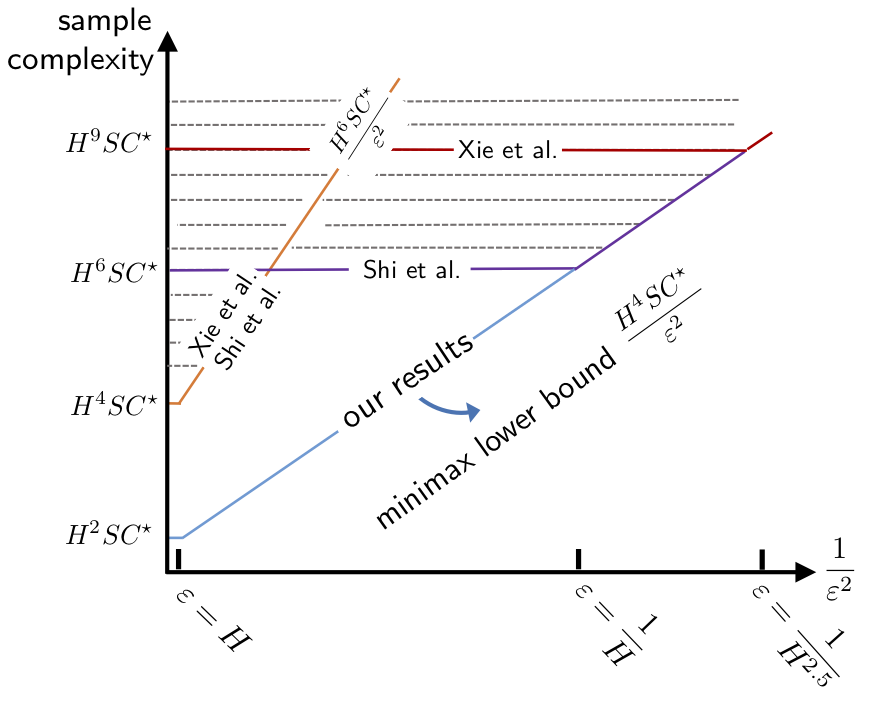
Settling the Sample Complexity of Model-Based Offline Reinforcement Learning
Gen Li, Laixi Shi, Yuxin Chen, Yuejie Chi, Yuting Wei.
The Annals of Statistics, 2024.
[Paper]
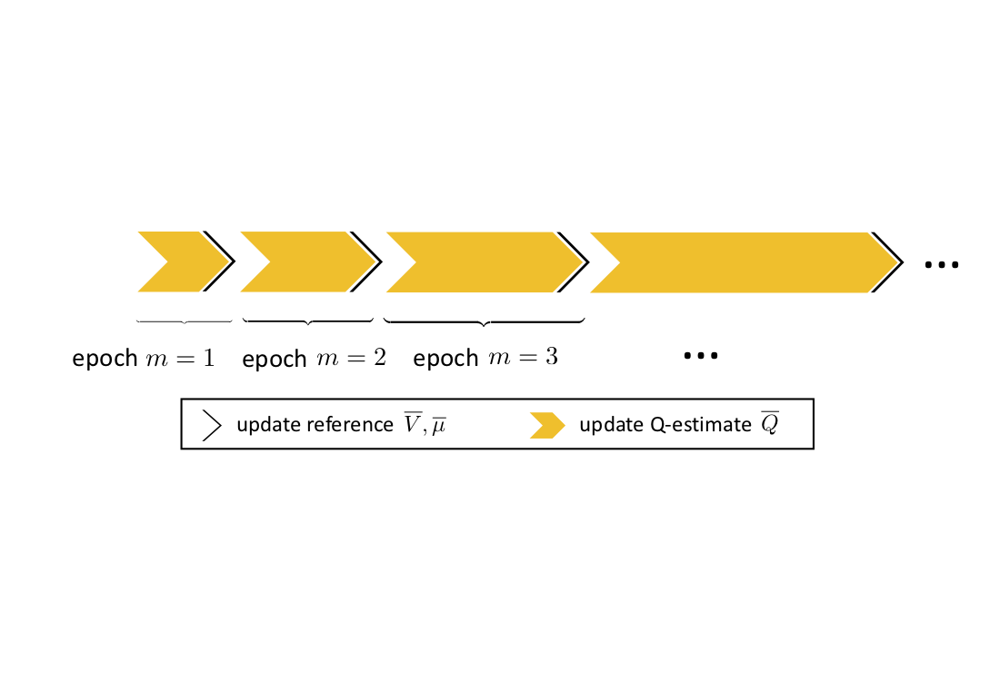
Pessimistic Q-Learning for Offline Reinforcement Learning: Towards Optimal Sample Complexity
Laixi Shi, Gen Li, Yuting Wei, Yuxin Chen, Yuejie Chi.
International Conference on Machine Learning (ICML), 2022.
[Paper]
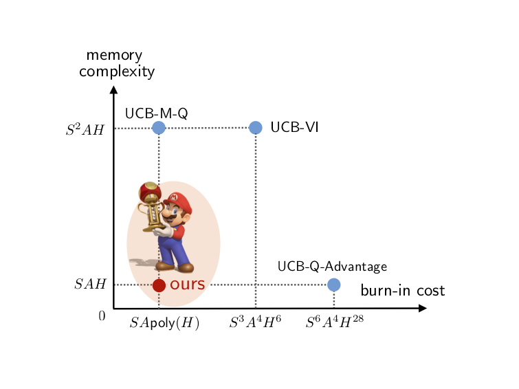
Applications
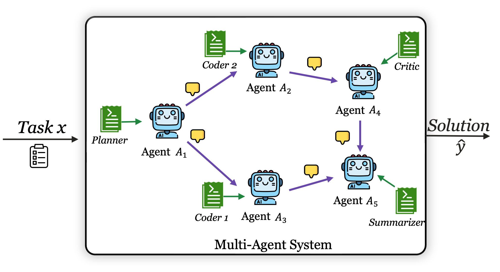
MAS-PromptBench: When Does Prompt Optimization Improve Multi-Agent LLM Systems?
Juyang Bai, Laixi Shi
arXiv, 2026
[Arxiv]
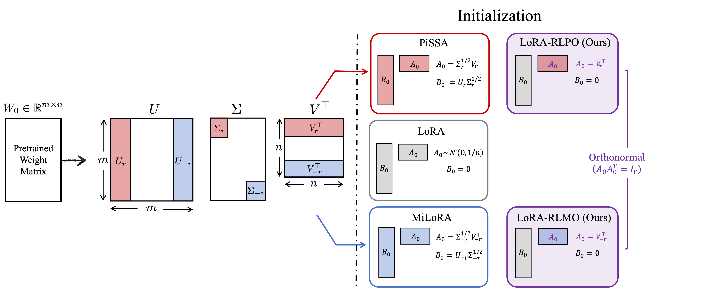
Geometry-Preserving Orthonormal Initialization for Low-Rank Adaptation in RLVR
Ruijia Zhang, Jiacheng Zhu, Andy Su, Hanqing Zhu, Laixi Shi
International Conference on Machine Learning (ICML), 2026
[Paper]

Robust Gymnasium: A Unified Modular Benchmark for Robust Reinforcement Learning
Shangding Gu*, Laixi Shi*, Muning Wen, Ming Jin, Eric Mazumdar, Yuejie Chi, Adam Wierman, Costas Spanos
International Conference on Learning Representations (ICLR), 2025.
[Github]
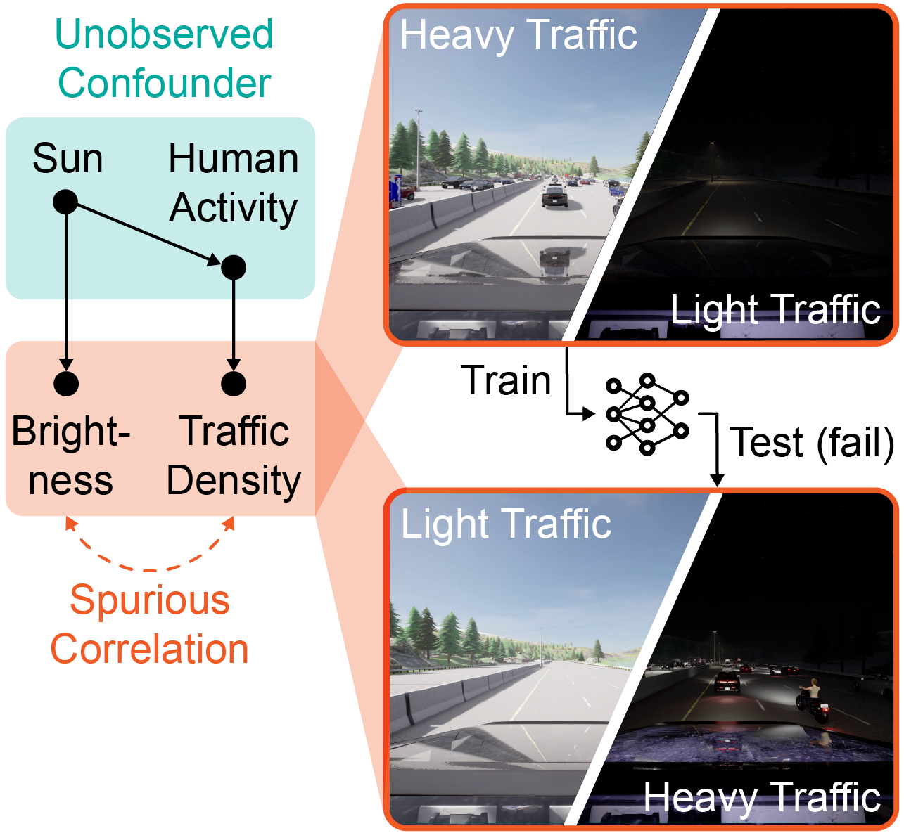
Research Support
We gratefully acknowledge the support from JHU DSAI, MERL, and NSF IMSI.